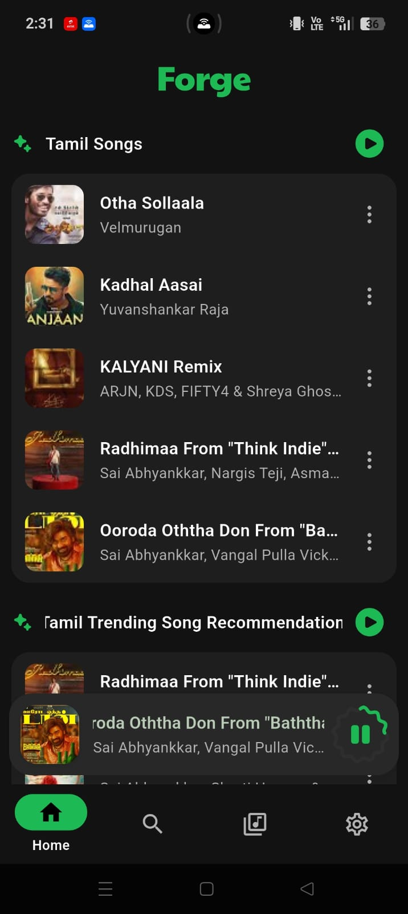
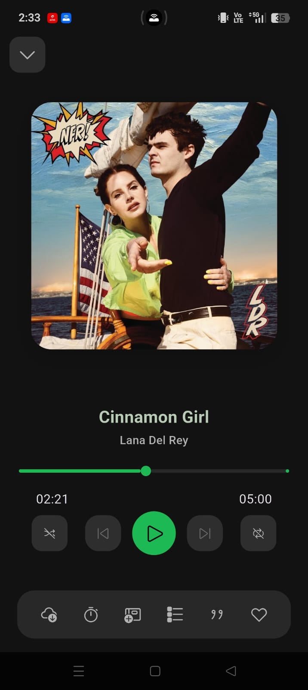

01 — FIND
a new
favorite.PLAY
IT
AGAIN
favorite.PLAY
IT
AGAIN
Follow the feeling.
Search across songs, artists, albums, and playlists. When something sticks, keep it close.
THE PLAYER FOR YOUR MUSIC LIFE ANDROID · DESKTOP
An open-source player that gives your music room to be yours. Find a new favorite, build your own little world, take it with you.


THE GOOD PART MADE FOR THE MOMENT
Music is a thousand little rituals. Forge gives all of them a place to land.
Search across songs, artists, albums, and playlists. When something sticks, keep it close.
Playlists, folders, favorites, radio, and history—organized around the way you listen.
Save songs and playlists for offline listening, and bring your soundtrack along.
TAKE A CLOSER LOOK ACTUAL FORGE SCREENS
Thoughtful where it counts. Personal where it matters. See the player as it is today—no mockups, just the real thing.
MADE TO BE YOURS BUILT IN THE OPEN
Forge is free, open-source, and local-first. Your playlists, settings, and listening history live on your device. There’s no remote account or cloud database to sign into.
Explore Forge on GitHubONE PROJECT WHERE YOU LISTEN
Pick up the music on Android or your desktop. See which official build is ready for your device.
Choose your device